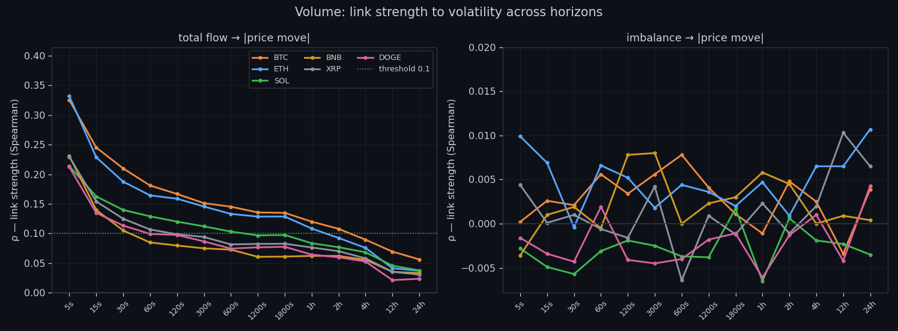
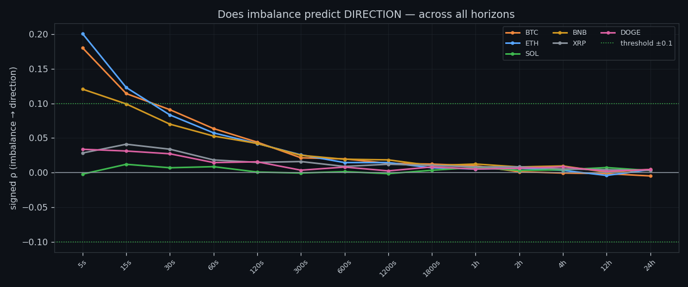

About Market Research Lab — What We Collect and Why
Most market commentary is storytelling. We built something testable instead: 166 days of second-by-second order-book data across six coins, and a rule that nothing gets published unless it survives out-of-sample.
Full walkthrough — streamed from YouTube.
① What we collect
Every second, around the clock, we record the Binance order book for six pairs — BTC, ETH, SOL, BNB, XRP and DOGE. For each pair we store eight microstructure features plus price: the resting buy and sell walls, how those walls thicken and thin out, and the raw buy/sell volume hitting them. The collector has been running non-stop since 14 February 2026; the archive is now 166 trading days and more than 11 million second-by-second rows per coin — roughly 60 million rows in total, growing every day.

② Why we do it
Most crypto commentary is storytelling: a chart, a narrative, no way to check it. We wanted the opposite — claims small enough to be measured and specific enough to be wrong. Every statement we publish has a number behind it, a sample size, and a test on data the model never saw. If a claim can't survive that, it doesn't get published here. That includes our own favourite ideas: several of them died in testing, and we say so.
③ How we dig
First we build baselines: what counts as 'normal' for this coin at this timeframe. Turnover per second is tiny; aggregate to minutes, hours and days and it grows by orders of magnitude, so a 'spike' only means anything relative to its own window — never as an absolute number. On top of those baselines we build feature profiles, a market-state oscillator, autocorrelation and event studies around unusual order-book behaviour. Predictions are written down first and scored later. No moving the goalposts.

④ What we test
Three lines of work. Volatility forecasts built from order-book flow. A market-state oscillator that reads the tape's temperature. And trading bots — always walk-forward, always benchmarked against simple buy & hold, priced with a realistic 0.15% fee per action, with take-profit deliberately smaller than stop-loss. Live paper bots run a champion-versus-challenger tournament: a fresh candidate is trained after every closed trade and only replaces the incumbent if it actually scores better.

⑤ What we've learned: size is forecastable
Order-book flow predicts how big the next move will be. Rank correlation runs around 0.55 in the moment and roughly 0.25–0.30 five minutes ahead — consistently, on all six coins. The cleanest validated pattern is the wall that drains: when resting liquidity is pulled without being replaced, the following window runs ×1.4–1.6 more volatile than usual, while a thick untouched wall precedes calm (×0.84–0.94). The edge is real but short-lived: strong in minutes, essentially gone by a day.

⑥ What we've learned: direction is not
The same data says almost nothing about which way. Forward directional correlation is about zero by every method we tried — imbalance sweeps top out near ρ≈0.2 on BTC and ETH and collapse to zero on SOL, XRP and DOGE. Every purely directional strategy we tested lost out-of-sample: momentum, intraday, move-start detection, fade-the-turbulence. Gross edge came in below the round-trip fee, which is the honest way of saying there was no edge. So we forecast risk, not a guessed side.

⑦ Our promise
The moment a strategy shows a positive, validated, out-of-sample result, it gets published here — the method, the numbers and the caveats, including the ones that hurt. Until then we keep digging in the open: each study becomes an article with its charts, and every chart is reproducible from the archive. Data collection, analysis, charts and narration are produced with AI assistance and reviewed by a human before anything goes out.
If this changed how you read the tape, the natural next step is Volume is the fuel — not the steering wheel — Eighteen sections on what volume really predicts: the size of the next move, never its side.
Volume is the fuel — not the steering wheel
Eighteen sections on what volume really predicts: the size of the next move, never its side.
Order flow predicts how much, not which way
Across six coins, flow surges line up with bigger moves — but not their direction.
The Wall That Goes Quiet: What Resting Liquidity Predicts
We measured resting limit liquidity sitting on both sides of the book second by second across six coins, and asked the only question that matters:….
Liquidity Pulled: What Happens When a Wall Drains
We measured resting liquidity being pulled away from the book second by second across six coins, and asked the only question that matters: does it….
Comments
Discussion is powered by GitHub. Enable it by adding secrets/giscus.json (repo IDs from giscus.app).